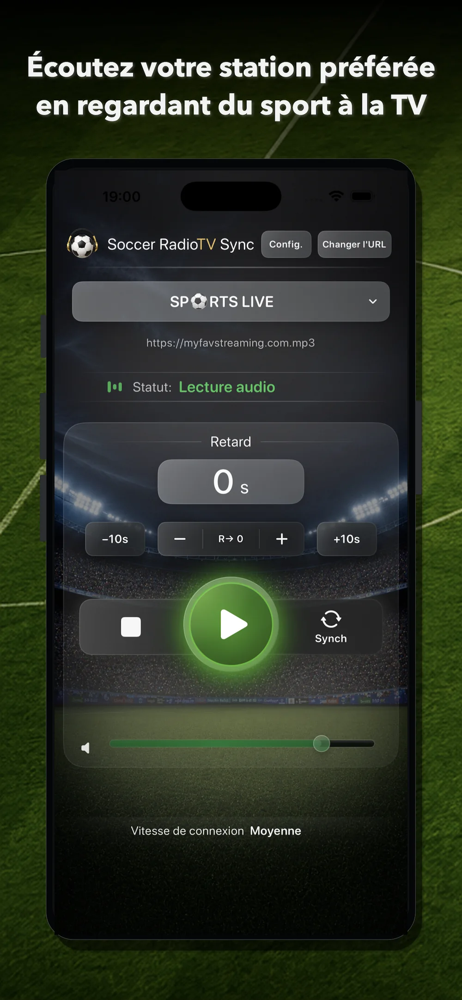
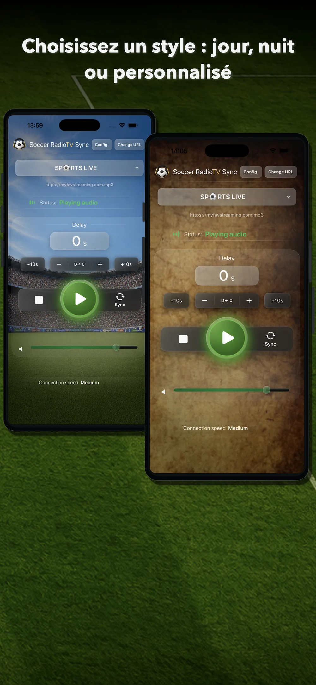
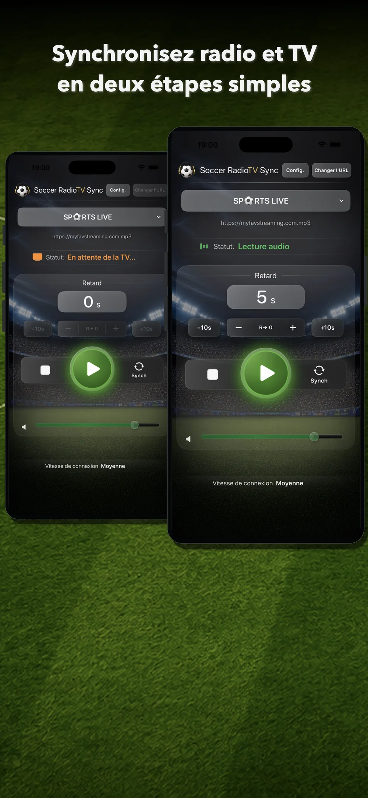
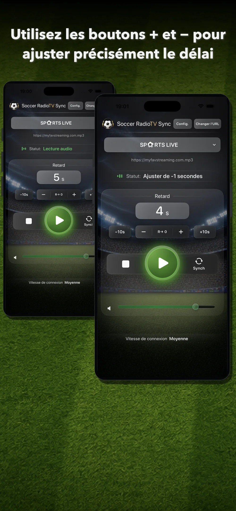
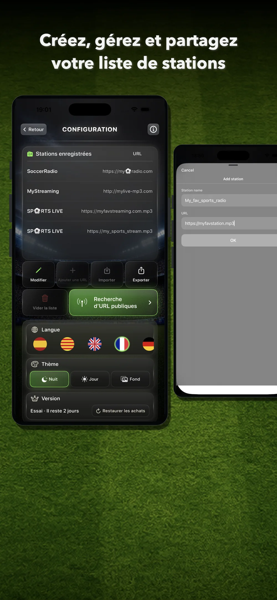
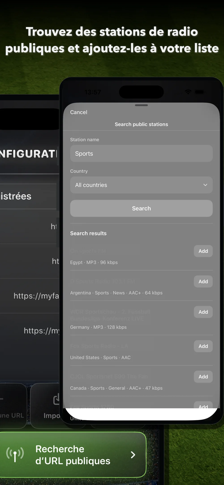

Choisissez une station
Sélectionnez une station enregistrée, ajoutez un flux compatible ou passez d’une URL à l’autre pour une même station.
Soccer RadioTv Sync vous permet d’écouter le commentaire radio de votre choix, synchronisé avec l’image de la télévision pendant que vous regardez du football et d’autres sports.
L’app est spécialement conçue pour le sport sur la TV en streaming, lorsque l’image peut arriver après la radio en ligne. Réglez le retard de la radio depuis votre iPhone et retrouvez l’expérience classique du match : regarder la rencontre à la télévision en écoutant votre commentaire préféré.

Découvrez des stations publiques, ajoutez vos propres URL et synchronisez la radio avec l’image TV. Après l’essai, débloquez Premium à vie avec un achat unique.
Soccer RadioTv Sync 2.0 adopte une interface plus visuelle, moderne et claire. L’idée d’origine reste la même : retarder la radio pour la faire coïncider avec l’image. Il est désormais plus simple d’ajouter des sources grâce à la recherche de stations publiques, la lecture démarre plus tôt après avoir touché Play, la sélection des stations a été améliorée et l’écran principal peut être personnalisé.

L’écran principal réunit l’essentiel : station active, URL actuelle, état de lecture, valeur du retard, commandes de réglage, bouton Synch, volume et vitesse de connexion.
Sélectionnez une station enregistrée, ajoutez un flux compatible ou passez d’une URL à l’autre pour une même station.
Lancez l’audio, puis synchronisez-le avec l’image TV lorsqu’un moment reconnaissable se produit.
Utilisez +, –, +10s et –10s pour corriger le retard sans interrompre le match.

Touchez Synch lorsque vous entendez un moment reconnaissable à la radio. Lorsque vous voyez ce même moment à la télévision, touchez de nouveau Synch. L’app calcule le retard et ajuste la lecture afin que la radio corresponde à l’image. Vous pouvez ensuite affiner le résultat avec + et –.
Utilisez + et – pour corriger un léger décalage entre le son et la TV pendant le match. Utilisez +10s et –10s pour des changements plus rapides. Pour recommencer, remettez le retard à zéro avec R→ 0.

Ajoutez des stations à l’aide du moteur de recherche ou manuellement, puis créez votre propre liste. Gérez l’ordre des stations et de leurs serveurs. Exportez votre liste comme sauvegarde ou partagez-la avec vos amis.


Recherchez des stations de radio publiques grâce à un outil intégré basé sur Radio Browser.
Vous pouvez ainsi ajouter les retransmissions de créateurs ou de commentateurs qui diffusent uniquement en streaming.
Passez d’un serveur de la station à l’autre en appuyant sur "Changer d’URL".
Dans la version 2.0, la station démarre plus tôt après avoir touché Play, pour une utilisation plus rapide et directe.
Utilisez le mode Jour, le mode Nuit ou un arrière-plan personnalisé sur l’écran principal.
Sans abonnement, sans publicité, sans compte obligatoire et sans collecte de données personnelles.
Testez l’app avec votre TV, votre station et votre façon de regarder le sport avant de décider.
Déblocage Premium avec un achat unique après l’essai. Sans abonnement. Les anciens acheteurs reçoivent Premium automatiquement.
Premium débloque toute l’expérience Soccer RadioTv Sync après l’essai.
Soccer RadioTv Sync est née d’une situation très concrète : son créateur, passionné de football depuis l’enfance, voulait continuer à regarder les matchs à la télévision tout en écoutant son commentateur radio préféré. Avec l’arrivée de la télévision en streaming, l’image a commencé à être décalée par rapport à la radio : les buts s’entendaient avant de se voir, ce qui gâchait l’expérience. Ne trouvant aucun moyen simple de résoudre le problème, il a développé une première application très basique sur un MacBook de 2013. Elle ne diffusait qu’une seule station, mais son cœur de synchronisation permettait de retarder l’audio pour le synchroniser avec l’image de la télévision. En parcourant des forums et les réseaux sociaux, il a découvert que de nombreux supporters de différents pays évoquaient le même problème. L’app ne pouvait pas rester un simple prototype. C’est à partir de ce cœur de synchronisation qu’est née la version iPhone de Soccer RadioTv Sync : une application indépendante conçue spécialement pour retrouver le plaisir des retransmissions sportives d’autrefois, adaptée à l’ère du streaming.
Elle permet d’écouter un flux radio en ligne compatible synchronisé avec l’image TV pendant le sport, notamment lorsque la TV en streaming arrive après la radio en ligne.
L’app permet de rechercher des stations publiques avec un outil intégré basé sur Radio Browser. Vous pouvez également ajouter manuellement vos propres URL compatibles.
Vous pouvez utiliser des flux audio en ligne compatibles. Certaines radios, commentateurs, créateurs et certains services proposent des flux qui peuvent être ajoutés manuellement s’ils sont compatibles avec le système de lecture de l’app.
Vous pouvez essayer une autre URL ou un autre serveur de la même station. Les serveurs peuvent présenter des latences différentes.
Non. Aucun compte n’est nécessaire.
Non. L’app propose un essai gratuit de 7 jours, puis un déblocage Premium à vie avec un achat unique.
Les anciens acheteurs reçoivent automatiquement Premium à vie.
C’est le scénario principal. Avec la TV en streaming, l’image peut arriver après la radio en ligne et l’app peut retarder la radio pour la synchroniser avec l’image.
Avec la TNT ou le satellite, le timing peut être différent car l’image peut arriver avant la radio en ligne. Soccer RadioTv Sync est principalement conçue pour les situations où la radio doit être retardée afin de correspondre à une image TV plus tardive.